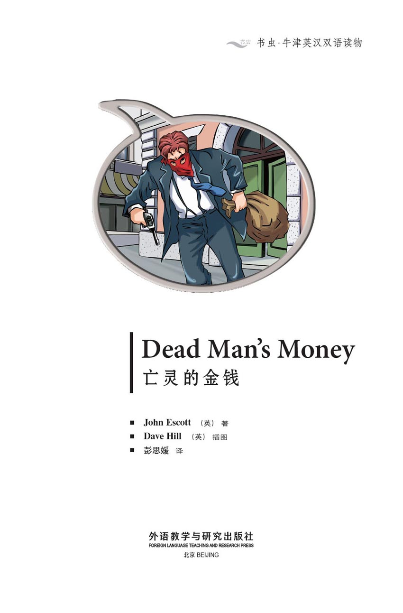
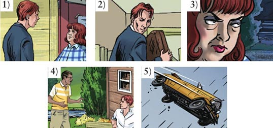
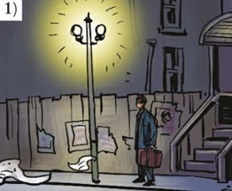
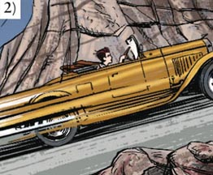
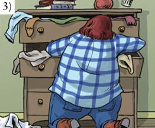
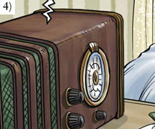
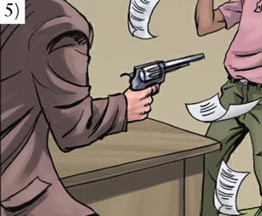
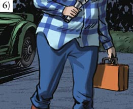

扉页

版权页
京权图字：01-2013-7796
Published by arrangement with Oxford University Press for sale in the People's Republic of China only and not for export therefrom. This edition is for sale in the mainland of China only, excluding Hong Kong SAR, Macao SAR and Taiwan.
© Oxford University Press 2011
Oxford is a registered trademark of Oxford University Press
图书在版编目（CIP）数据
亡灵的金钱：英汉对照／（英）埃斯科特（Escott, J.）著；（英）希尔（Hill,D.）绘；彭思媛译．—北京：外语教学与研究出版社，2013.11
（书虫·牛津英汉双语读物）
书名原文：Dead man's money
ISBN 978-7-5135-3769-8
Ⅰ．①亡… Ⅱ．①埃…②希…③彭… Ⅲ．①英语—汉语—对照读物②短篇小说—英国—现代 Ⅳ．①H319.4：I
中国版本图书馆CIP数据核字（2013）第272351号
出版人 蔡剑峰
责任编辑 谷 丰
封面设计 蔡 颖
出版发行 外语教学与研究出版社
社 址 北京市西三环北路19号（100089）
网 址 http://www.fltrp.com
版 次 2013年12月第1版
书 号 ISBN 978-7-5135-3769-8
制售盗版必究 举报查实奖励
版权保护举报电话：（010）88817519
内容简介
内容简介
埃迪是臭名昭著的“红面具团伙”中的一员银行劫匪。上一次抢劫银行后，他自觉成了富人。他在山中美丽的蓝湖木屋山庄租下了一座木屋。一天，埃迪开车出去兜风。雨中的山路十分危险。
突然，埃迪的汽车冲出了公路。
“啊，不好！”埃迪叫道。
然而，一切都太迟了。他无法把车停下。
埃迪死了。但他留下了从银行抢来的三千美元。
作家卡尔·德克斯特发现了这笔钱。起初，他很兴奋。
但没过多久就有人来找这笔钱，而且来人很危险……
DEAD MAN'S MONEY
DEAD MAN'S MONEY
Eddie is one of the famous Red Mask Gang of bank robbers. And he's feeling rich after the last bank robbery. He rents one of the beautiful Blue Lake Cabins in the mountains. One day, Eddie goes for a drive. The mountain road is dangerous in the rain.
Suddenly, Eddie's car goes off the road.
'Oh, no!' says Eddie.
But it is too late. He can't stop the car.
Eddie dies. But he leaves behind $3,000 from the bank robbery.
Writer Cal Dexter finds it. At first he's excited.
But soon some people come looking for the money. And these people are dangerous...
目录
Dead Man's Money

GLOSSARY 词汇表
GLOSSARY
词汇表
accident n. something bad that happens （不幸的）意外遭遇，事故
bank n. a building to put your money in 银行
brake n. the brakes make your car stop 刹车
cabin n. a small house 小木屋
count v. to see how much of something there is 数，清点
dangerous adj. something that can hurt or kill you 危险的，不安全的
dollar n. American money 美元
gang n. a group of people who do bad things （歹徒、匪徒等的）一帮
gas n. the American word for petrol – you put it in a car to make it go 〈美〉汽油
lake n. a big area of water 湖，湖泊
mask n. something to put over your face, so that people do not know you 面具，面罩
maybe adv. perhaps 也许，可能
news n. when someone tells you or writes about something new 消息，新闻
newspaper n. you can read about things that happen every day in this 报纸
outside adv. not in a building 在外面，在户外
police n. people who stop other people doing bad things 警察
rent v. to pay money to use something 租用
robber n. somebody who takes something that is not theirs 抢劫者，劫匪
share n. how much one person gets of something （某人应得的）一份
story n. Dead Man's Money is not true; it is a story （虚构的）故事，小说
thousand number one thousand = 1,000 一千
ACTIVITIES 阅读练习
Dead Man's Money
ACTIVITIES
阅读练习
ACTIVITIES
Before Reading
1 Look at the front cover of the book and answer these questions.
1) When do you think the story happens?
a □ today
b □ 1930s
c □ 2020
2) Where do you think the story happens?
a □ France
b □ England
c □ America
2 Read the back cover of the book and answer these questions.
1) What does Cal find under the floor of the cabin?
2) Where is it from?
3) Do you think Cal is going to...
a take it to the police?
b put it back under the floor?
c lose it?
ACTIVITIES
While Reading
1 Answer these questions.
1) Who are the three people in The Red Mask Gang?
2) Who drives the gang's car?
3) What happens to the police car?
4) Where is Eddie going to stay for a week or two?
5) How much is Eddie's share of the money?
2 Match the words with the pictures.

a 'He's only twenty or twenty-one. But he's got a lot of money.'
b 'Oh, no! no! NO!'
c 'Er – Collins. Edward Collins.'
d 'Where can i put my money?'
e 'Hi, there! How long are you staying?'
3 Are these sentences true (T) or false (F)?
1) The police take Eddie's things to the police station.
T □／F □
2) Wilma finds a red mask in Eddie's coat.
T □／F □
3) Wilma finds the money in Cal's cabin.
T □／F □
4) Joe and Blanche hear about Eddie's car accident on the radio.
T □／F □
4 Answer these questions.
Who... ?
1) ... goes out onto the lake?
2) ... asks Wilma about Edward Collins?
3) ... knows about car brakes?
4) ... has a gun?
Why... ?
5) ... can't Blanche get their car to start?
6) ... can't Blanche stop Cal's car?
5 Before you read the last two pictures, can you guess what happens?
1) Joe and Blanche escape with the money.
YES □／NO □
2) Wilma gets the money after the car crashes.
YES □／NO □
3) Wilma and Cal share the money after the car crashes.
YES □／NO □
4) nobody gets the money.
YES □／NO □
ACTIVITIES
After Reading
1 Complete this summary of some of the story. Use these words:
newspapers floor Mask money accident wants share robbers
Joe, Blanche, and Eddie are bank ________. The ________ call them The Red ________ Gang. After a robbery, Eddie goes to stay at the Blue Lake Cabins. He puts his ________ of the robbery money under the ________. Eddie dies in a car ________. Cal Dexter finds the________, but Wilma Pinch sees him. Now she ________ the money, too.
2 Use these words to join the sentences together.
but when for and
1) 'I can stay there. A week or two.'
2) Blanche drives the car faster. It's dangerous.
3) His name is Cal Dexter. He is a writer.
4) 'Dexter is going to look for the money. He gets back.'
3 Look at each picture and answer the questions.

Who is this?

Where is this car?

Who is this? What is she doing?

Who is listening to this radio?

Who is holding this gun?

Who is this?
TRANSLATION 参考译文
TRANSLATION 参考译文
Dead Man's Money
亡灵的金钱
The year is 1931. Two men run out of a bank in a little American town. Joe and Eddie are bank robbers. Joe's girlfriend, Blanche, is their driver. She is waiting in the car.
The newspapers call them The Red Mask Gang.
时为1931年。两名男子从美国一座小镇的一家银行里跑出来。他们是乔和埃迪，两个银行劫匪。乔的女朋友布兰奇是他们的司机。她正在车里等着。
报纸把他们称为“红面具团伙”。
Blanche drives out of the town. She is a fast driver.
How much money, Eddie?
About nine thousand dollars!
布兰奇开车离开了小镇。她开车开得很快。
埃迪，有多少钱？
大概九千美元！
Suddenly, Blanche sees a car.
The police!
They're getting nearer!
Faster, Blanche!
突然，布兰奇看到一辆车追了上来。
警察！
他们越来越近了！
再快点，布兰奇！
Blanche drives the car faster, but it is dangerous.
It's OK, Blanche! The police car is off the road!
Two hours later, Blanche drives into a town.
You can leave me here. I'm going to rent a car. There are some cabins near here. The Blue Lake Cabins. I can stay there for a week or two.
OK, Eddie. Phone us in two or three weeks. We're going to stay with Blanche's mother.
布兰奇开得更快了，但是这样很危险。
没事了，布兰奇！警车冲出公路了！
两个小时后，布兰奇把车开进了另一个小镇。
你们可以把我放在这儿。我会租一辆车。这儿附近有一些供出租的小屋，叫蓝湖木屋山庄。我可以在那里待上一两个星期。
好吧，埃迪。两三周后给我们打电话。我们会待在布兰奇她妈妈那儿。
Eddie takes his share of the money. He watches Blanche and Joe drive away.
Eddie gets a room for the night. Then he counts his share of the money.
Three thousand dollars!
Next morning, Eddie rents a car.
How far are the Blue Lake Cabins?
Not far. Wilma Pinch usually has cabins to rent.
埃迪拿上属于他的那份钱。他目送布兰奇和乔开车离去。
埃迪租了一个房间过夜。随后，他数着自己分到的钱。
三千美元！
第二天早上，埃迪租了一辆车。
蓝湖木屋山庄离这里有多远？
不远。维尔玛·平奇那里通常会有木屋出租。
Half an hour later, Eddie arrives at the Blue Lake Cabins.
I want your best cabin for a week or two.
OK. What's your name?
Er – Collins. Edward Collins.
Where can I put my money?
半个小时后，埃迪抵达蓝湖木屋山庄。
我想租你这里最好的木屋，租一两个星期。
好的。您叫什么名字？
呃——科林斯。爱德华·科林斯。
我能把钱放在哪儿呢？
In a different cabin, a man is working. His name is Cal Dexter, and he is a writer.
Later, Eddie goes and sits by the lake. It is a beautiful morning. Three or four minutes later, Cal comes down to the lake.
Hi, there! How long are you staying?
Hi. A week or two.
I'm here for the summer. You've got a cabin near the lake. They're too expensive for me. Have you got lots of money?
Yes!
That evening, Wilma Pinch sits outside her cabin. She looks at Eddie's cabin.
He's only twenty or twenty-one. But he's got a lot of money.
在另一座木屋里，一名男子正在工作。他叫卡尔·德克斯特，是一位作家。
过了一会儿，埃迪到湖边小坐。这是一个美丽的早晨。三四分钟后，卡尔来到湖边。
嗨，你好！你会在这里待多久？
嗨。一两个星期。
我来这里避暑。你要了一座湖边的木屋。这对我来说太贵了。你有很多钱吧？
是啊！
当晚，维尔玛·平奇坐在她的木屋外。她看着埃迪的木屋。
他才20或21岁，却有一大笔钱。
For the next three days, Eddie is very happy...
On day four, Eddie goes for a drive.
接下来的三天里，埃迪过得非常开心……
第四天，埃迪开车出去兜风。
After some time, it begins to rain.
The rain gets worse. And it is a dangerous road.
I need to go back.
Suddenly, the car goes off the road!
Oh, no! No! NO!
But it is too late. He can't stop the car.
过了一段时间，天开始下起雨来。
雨越下越大，而且这是一条危险的公路。
我得回去了。
突然，车子冲出了公路！
啊，不好！完了！完了！
但是太迟了。他无法把车停下来。
The next morning, a police car arrives at the Blue Lake Cabins. The policemen tell Wilma about Eddie.
The young man is dead. An accident in the rain. It's a dangerous road.
Bring his things to us later today.
OK.
Wilma tells Cal Dexter about Mr Collins.
That's bad... But can I move into Mr Collins' cabin?
OK, but it's another twenty dollars a week.
That's OK. I got $200 for my story!
第二天早晨，一辆警车开进蓝湖木屋山庄。警察把埃迪的事告诉了维尔玛。
那个年轻人死了。一起发生在雨中的事故。那是一条危险的路。
今天晚些时候，把他的物品交给我们。
好的。
维尔玛把科林斯先生的事告诉了卡尔·德克斯特。
真糟糕……但我能不能搬进科林斯先生的那座木屋？
可以，但每星期要多付二十美元。
没问题。我写小说挣了两百美元！
Wilma goes to Eddie's cabin. She puts his things in his bag.
Can I move in now?
Yes, it's ready now.
What—?
Money! Lots of it!
维尔玛走进埃迪的木屋。她把埃迪的物品装进他的箱子里。
我现在能搬进来了吗？
可以，现在已经收拾妥当了。
啊——？
钱！这么多钱！
Later that day, Wilma gets ready to take Eddie's things to the police.
What's this?
The Red Mask Gang! Mr Collins!
Is some of the bank money in Mr Collins' cabin?
I must find the money before Mr Dexter takes it.
那天晚些时候，维尔玛准备把埃迪的物品送到警察局去。
这是什么？
“红面具团伙”！科林斯先生！
从银行抢来的钱会不会有些还被藏在科林斯先生的木屋里呢？
我必须赶在德克斯特先生之前找到那笔钱。
Can I come in? I need to look for something.
What are you looking for?
I – er, it's not important.
Where's the money?
Does she know about the money?
我能进去吗？我需要找些东西。
你要找什么啊？
我——呃，无关紧要的东西。
钱在哪儿呢？
她知道那笔钱的事儿吗？
Wilma can't sleep. She goes for a walk by the lake.
Has Dexter got the money?
So Dexter has got the money! What's he going to do with it?
Three thousand dollars! Do I take it to the police? Or tell Wilma Pinch? No, not Wilma. I need to think about this.
It's the money from the bank robbery. But how do I get it?
维尔玛睡不着觉。她来到湖边散步。
德克斯特是不是已经拿到那笔钱了
果然，德克斯特已经拿到了那笔钱！他要怎么处理呢？
三千美元！我要把钱交给警察局吗？还是告诉维尔玛·平奇呢？不，不能和维尔玛说。这件事我要好好考虑考虑。
那是从银行抢来的钱。但我怎样才能得到那笔钱呢？
In a different town, Joe and Blanche are listening to the news. It is about a car accident near the Blue Lake Cabins.
... police are trying to find out about the dead man. His name is Edward Collins. He is about twenty years old, tall with red hair...
Eddie!
Yes! But what about the money?
Maybe the police don't know where it is.
We must drive up to the Blue Lake Cabins today.
在另一个小镇里，乔和布兰奇在听新闻。新闻正在报道一起在蓝湖木屋山庄附近发生的车祸。
……警方正在努力调查死者的情况。他的名字叫爱德华·科林斯。他大约二十岁，高个子，红头发……
埃迪！
没错！不过那笔钱怎么样了？
也许警察还不知道钱在哪里。
我们今天必须开车到蓝湖木屋山庄去。
That afternoon, Cal goes out onto the lake.
Now is a good time to look for the money.
The money!
Mr Dexter is going to look for the money when he gets back. I can take it later. But what do I do about Mr Dexter?
那天下午，卡尔去湖中游玩。
这会儿正是找那笔钱的好机会。
那笔钱！
德克斯特先生回来后会找这笔钱的。我可以过一段时间再来拿。不过我要怎么对付德克斯特先生呢？
Later that day...
We want to rent a cabin.
There's one near the lake. It's expensive.
That's OK.
A young man with money! That's interesting.
Joe asks Wilma about Edward Collins.
A friend of yours?
Yeah, a good friend...
Can we have his cabin?
Sorry, Mr Dexter's got it now.
那天晚些时候……
我们想租一座木屋。
湖边有一座，但是价格很高。
这个没问题。
一个有钱的年轻人！有意思！
乔向维尔玛打听爱德华·科林斯的事。
是你的朋友吗？
是的，一个好朋友……
我们能住在他的那座木屋吗？
抱歉，现在德克斯特先生住在那里。
Who is this man Dexter?
He's a writer. He's out on the lake.
We need to talk to Dexter.
What about Wilma Pinch? Maybe she has the money.
Maybe. But first we talk to Dexter.
Half an hour later, they go down to the lake.
这个德克斯特是什么人？
他是个作家。他现在在湖上。
我们得和德克斯特谈谈。
那维尔玛·平奇呢？也许是她拿了那笔钱。
有可能。但我们先找德克斯特谈谈。
半个小时后，他们来到湖边。
Hi. Are you the writer?
Yeah, that's me.
I'm Blanche, this is Joe. I write stories sometimes.
Maybe you can help me?
OK, come to my cabin for a drink this evening.
Late that evening, Wilma walks across to Cal's car.
Wilma knows about cars – and about car brakes.
嗨。你就是那位作家？
对，就是我。
我是布兰奇，这是乔。我有时会写些小说。
也许你可以帮帮我？
没问题，今晚来我的木屋喝一杯吧。
当天深夜，维尔玛走到卡尔的汽车旁。
维尔玛了解汽车——还有汽车的刹车。
In Cal's cabin, Cal shows Blanche his new story. Joe is thinking about Eddie's share of the money.
Has he got it? It's time to see.
We want the money, Cal. Eddie's money.
Wh – what money? Who is Eddie?
Three thousand dollars. And you're going to give it to us.
OK, OK!
在卡尔的木屋里，卡尔把他新写的小说拿给布兰奇看。乔则想着埃迪的那份钱。
他拿了那笔钱吗？是时候确认了。
我们要那笔钱，卡尔。埃迪的钱。
什——什么钱？谁是埃迪？
三千美元。你必须把钱给我们。
好，好！
It's all here, Joe.
When Dexter goes into town, there's going to be an accident. Then I can take the money.
It's time for us to go, Cal. Maybe you can write a story about this!
We can be in the town by midnight.
钱都在这儿，乔。
德克斯特开车去镇上的时候，就会出车祸。到时我就能拿到那笔钱了。
我们得走了，卡尔。或许你可以就这件事儿写一篇小说！
我们午夜之前就能回到镇上。
Why are they leaving?
Oh, no! There's no gas!
We can take Dexter's car.
What's happening? Is Dexter OK? Is the money OK?
他们为什么要离开？
啊，不好！没有汽油了！
我们可以开德克斯特的车。
怎么回事儿？德克斯特没事儿吧？那笔钱还在吗？
Oh, no!
The money! Have they got the money?
Yes. But how do you know about...?
We must stop them! Come on, we can take my car.
Why? I don't understand.
Blanche is driving fast through the night... too fast!
There are no brakes!
啊，不好！
那笔钱！他们拿走那笔钱了吗？
是啊。不过你又是怎么知道……？
我们必须阻止他们！快，可以开我的车。
为什么？我不明白。
布兰奇在夜幕中开得飞快……快得过头！
这车没有刹车！
Oh, no! The money!
A dead man's money!
啊，不好！那笔钱！
一个亡灵的钱！
封底